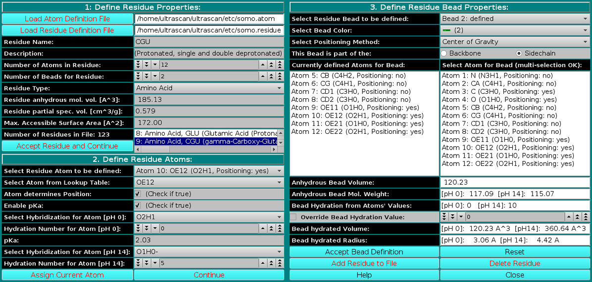
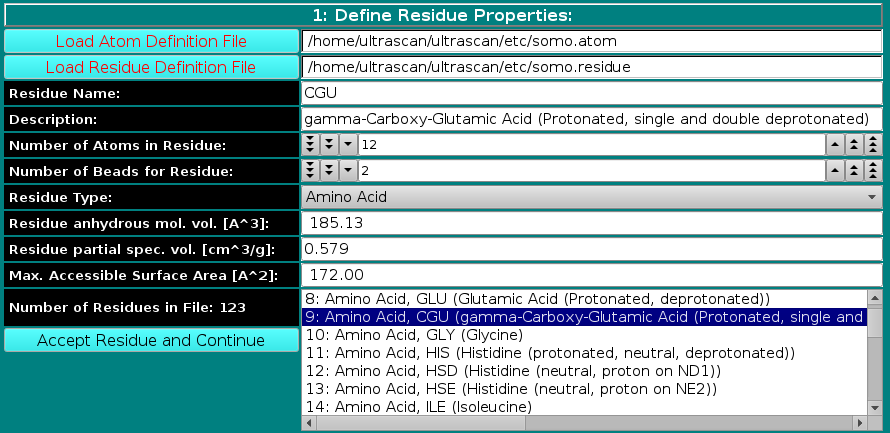
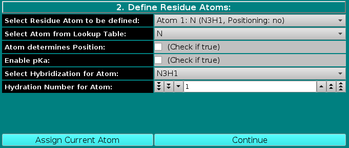
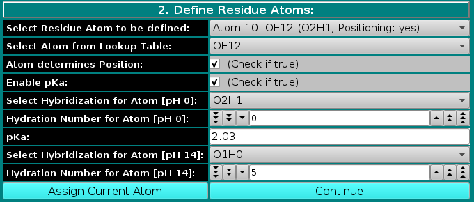
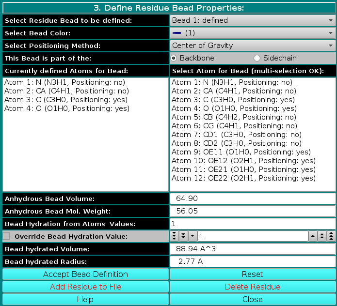
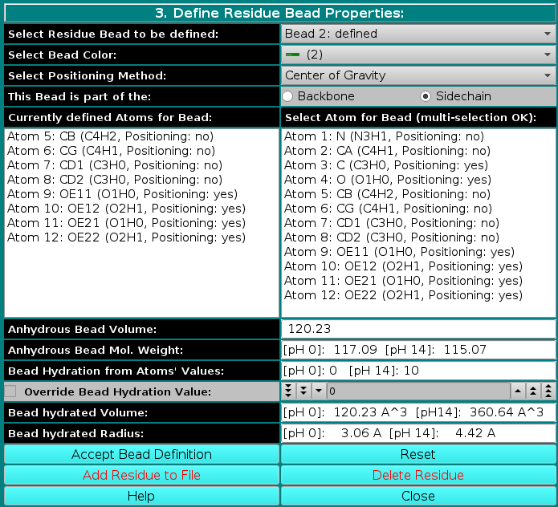

| |
Manual |

This module is used to define all residues that can be found in PDB files. Here, you can also define the rules which are used to convert them into beads. You can add new residues or modify the properties of the existing ones. Starting from the February 2021 US-SOMO release, important modifications were implemented in this module, to allow for a pH-dependent control of properties like the molecular weight and the hydration. The example we will be using is that of a polyprotic amino acid residue (γ-carboxy glutamic acid).
Three panels are available in this module:
Panel 1: Define Residue Properties:
|  |
|
In this panel, you can add or modify the general properties of a residue. To add a new residue, you must first load the atom table containing the atomic groups, as defined in the PDB file (N, CA, CB, etc.), that make up the residue. The Residue Type field is then defined from the pull-down list, presently including:
The Residue anhydrous mol. vol. (A^3) field has to be filled with a value usually derived from crystallography (see Tsai et al., J. Mol. Biol. 290:253-266, 1999; Nadassy et al., Nucl. Acid Res. 29:3362-3376, 2001; Voss and Gerstein, J. Mol. Biol. 346:477-492, 2005; Perkins, Eur. J. Biochem. 157:169-180, 1986). This is the volume that defines the total anhydrous volume of the bead(s) that will be used to model the residue, and for non tabulated entries it can be computed using on-line programs such as the 3V Contact Volume Calculator (http://3vee.molmovdb.org/; a 0 Å probe radius should be used). When all fields have been filled, the residue is accepted by pressing the Accept Residue and Continue button, and the Number of Residues in File field is consequently updated. |
Panel 2: Define Residue Atoms:
|  |
|
In this panel, the atoms making up the residue are chosen, using the atom table previously selected. The atoms are numbered sequentially up to the value entered in the Number of Atoms in Residue
field in the previous panel, and can be chosen from the Select Residue Atom to be defined pull-down menu.
If the Enable pKa: checkbox is selected, the Select Hybridization for Atom and Hydration Number for Atom fields are duplicated, with changes in their labels, and a new pKa: field appears, as shown below: |
|  |
|
Namely, the hybridization and the hydration will have to be defined at the two extremes of the pH range, 0 and 14, by first filling the field Select Hybridization for Atom [pH 0] from the pull-down menu, followed by entering an hydration value in the Hydration Number for Atom [pH 0] field. A pKa value for the atom must be then entered in the pKa: field. For the amino acid residues listed in the February 2021 US-SOMO release, the pKa values were taken from Thurlkill et al., Protein Science 15:1214-1218, 2006. The Select Hybridization for Atom [pH 14] and Hydration Number for Atom [pH 14] fields are then filled. The use of the pKa- and pH-dependent hydration values, using the Henderson-Hasselbach equation, is described in the US-SOMO main Help page.
Note that so far we have assigned directly to atoms only the amino acids hydration values, derived from the theoretical hydration numbers for entire residues of Kuntz and Kauzmann (Adv. Protein Chem. 28:239-345, 1974). For ionizable atoms, Kuntz and Kauzmann hydration values were reported for the fully ionized state. We have assumed that the hydration values are 0 at the pH extreme at which the residue is fully not ionized, and assume the maximum value at the other pH extreme, where the residue is fully ionized. The global hydration number for each bead in the residue is subsequently computed by summing up all the values for atoms that are assigned to that bead. For non-ionizable residues, this calculated global value can be replaced with another value using the Override Bead Hydration Value button in the third panel of this editor (see below), while for residues having defined ionizable atoms a value at pH=7 is saved as a reference in the somo.residue file. The actual hydration is computed for each bead at a given pH during the model-generation routines. |
Panel 3: Define Residue Bead Properties:
|  |
|
In the last panel of this module, the atoms in each residue are assigned to bead(s), and each bead's properties are then defined.
Center of gravity: between the atoms assigned to the bead and marked "yes" in the Atom determines Position checkbox in Panel 2; Each bead needs then to be defined as belonging to the backbone or to the sidechain of the molecule by clicking the appropriate box in the This Bead is part of the: field. This determines at which sequential stage the bead will be processed during overlap removal in the SoMo method. The next step is the assignment of atoms to the bead. In the Select Atom for Bead (multi-selection OK) window, you can see the list of all the atoms that belong to the residue, as defined previously in Panel 2. By clicking on an atom, it will be also displayed in the Currently defined Atoms for Bead window to the left. Once all atoms belonging to a bead have been selected, the bead is accepted by clicking on the Accept Bead Definition button. The Anhydrous Bead Volume field defines the anhydrous volume (in A3) assigned to the bead. IMPORTANT: the sum of the volumes of the bead(s) defining a residue MUST match the Residue anhydrous mol. vol. entered in Panel 1. The program will NOT let you save the residue/bead definition if there is a discrepancy between these two values. The values present in the current definitions of the amino acid residues were derived from the crystallographic analysis (see above for references). When a molecule needs to be subdived in more than one bead, the volumes of the various parts can be determined using the 3V Contact Volume Calculator (see above). However, the parts' volumes will NOT add up to the entire molecule volume, and MUST be then proportionally rescaled. The volume of all other entries in the current somo.residue table were determined in this way. From this point onwards, all but one of the fields will be for visualization only, and their content vary between beads not-containing or containing pH-dependent ionizable atoms. The figure above shows the behavior of the fields for a bead not-containing ionizable atoms (see below for the correspondent figure for a bead containing ionizable atoms). Anhydrous Bead Mol. Weight will display the anhydrous bead molecular weight, calculated from the atom's values (taken from the atom table). Bead Hydration from Atoms' Values will show the theoretical number of water of hydration molecules assigned to the bead, based on the sum of the atoms' values entered in Panel 2. However, since the atomic values are likely not defined for most residues, and if ionizable atoms are not contained in the current bead, a global hydration value can be entered in the next field, Override Bead Hydration Value. Most beads' values currently present in the somo.residue file were derived from literature. For carbohydrates, we used the values of Shiio (J. Am. Chem. Soc. 80:70-73, 1958). For ions, we used the values in Table I of Kiriukhin and Collins (Biophys. Chem. 99:155-168, 2002). For the other residues, and for further information, see Brookes et al., Eur. Biophys. J. 39:423-435, 2010, and Rai et al., Structure 13:723-734, 2005. The volume of these water molecule(s) (defined under the Miscellaneous Options; see here) will be automatically added to the anhydrous volume of the bead to define its hydrated volume and radius during the building of a bead model from a PDB structure using any of the methods available in US-SOMO. Finally, the last two fields, Bead hydrated Volume and Bead Hydrated Radius will display the bead's hydrated molecular volume and hydrated radius (derived by summing to the anhydrous Bead Volume the volume of the water of hydration molecules, see above). If the residue is represented by more than one bead, the process is repeated until all beads have been processed. When a bead contains pH-dependent ionizable atoms, the last fields of this panel display additional information, as can be seen in this figure:
|
|  |
|
The Anhydrous Bead Mol. Weight will now display the anhydrous bead molecular weight, calculated at the two pH extremes, [pH 0] and [pH 14], based on the number of protons bound to the ionizable atom(s) assigned to in the bead under the two pH conditions. Likewise, the Bead Hydration from Atoms' Values will show the theoretical number of water of hydration molecules assigned to the bead, calculated at the two pH extremes, [pH 0] and [pH 14], based on the ionization status of atom(s) assigned to the bead under the two pH conditions. Note that in this case the Override Bead Hydration Value checkbox and field are not available. Finally, in the last two fields, Bead hydrated Volume and Bead Hydrated Radius, the bead's hydrated molecular volume and hydrated radius (derived by summing to the anhydrous Bead Volume the volume of the water of hydration molecules, see above) will be displayed for the two pH extremes, [pH 0] and [pH 14].
The residue can then be added to the file by clicking on the Add Residue to File button. If the beads' anhydrous volumes sum doesn't match the residue's anhydrous volume as entered in the first section, a pop-up window will appear warning of the problem and prompting to either accept the current bead volumes values, or for corrective action to be taken. To Edit an already defined residue, double-click on its name on the list (that can be scrolled) present in the window next to the Number of residues in File field in Panel 1. All the stored properties will then appear first in the Panel 1 fields, which can then be updated. By clicking on the Accept Residue and Continue button, the properties listed in Panel 2 become then accessible, and can be likewise edited. Finally, the Panel 3 options will become again available for editing by clicking on the Continue button in Panel 2. Accept Bead Definition and Add Residue to File buttoms will then allow to update the residue table (somo.residue). A selected residue/bead definition can be also removed from the file by clicking on the Delete Residue button. Pressing Close will then exit from the Modify Residue Lookup Tables menu and return the operator to the Main menu. |
This document is part of the UltraScan Software Documentation
distribution.
Copyright © notice.
The
latest version of this document can always be found at:
Last modified on March 21, 2023.
{kind=link}
{kind=link}
{kind=link}